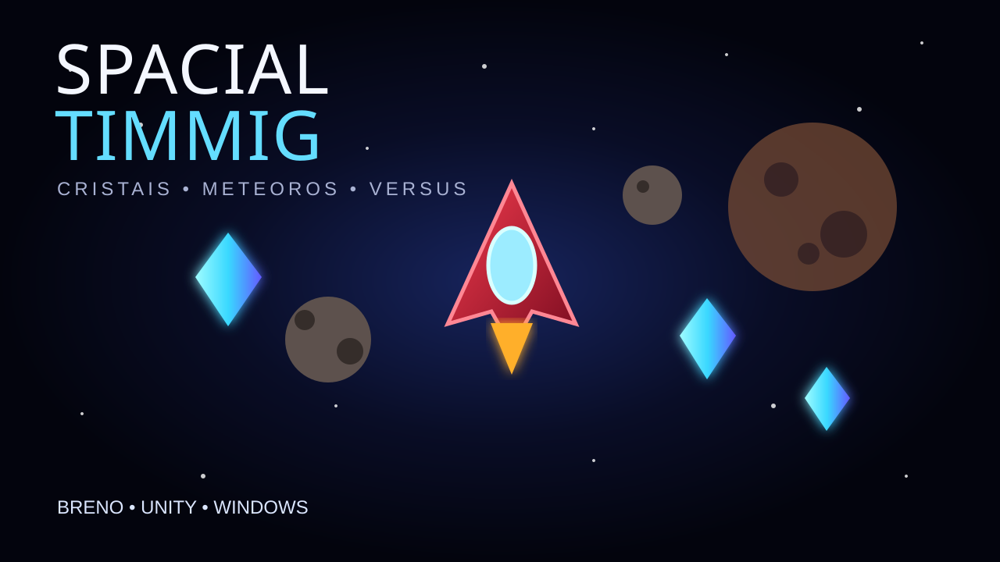

Colete cristais
O objetivo do jogo é acumular o máximo de cristais possível antes do cronômetro chegar ao fim.
Controle uma nave que gira continuamente, acelere no momento certo, desvie de meteoros e colete o máximo de cristais antes que o tempo acabe.

O objetivo do jogo é acumular o máximo de cristais possível antes do cronômetro chegar ao fim.
O espaço é cheio de perigos. Colisões custam vida e o jogador possui três corações.
A nave gira no sentido horário. No PC, pressione W para acelerar na direção para a qual ela estiver apontando.
No modo solo, o jogador pode selecionar uma nave vermelha ou verde, entrar na arena espacial e tentar fazer a melhor pontuação possível.
Quando os três corações acabam, a partida termina. O jogo também conta com tela de resultados, reinício e pausa.
O build inclui um modo multiplayer local com placares separados, cronômetro, cristais e uma tela final indicando quem venceu.
Desenvolvimento do Spacial Timmig
Build para Windows. Baixe o ZIP, extraia a pasta e execute Spacial Timming.exe.
↓ Baixar Spacial Timmig